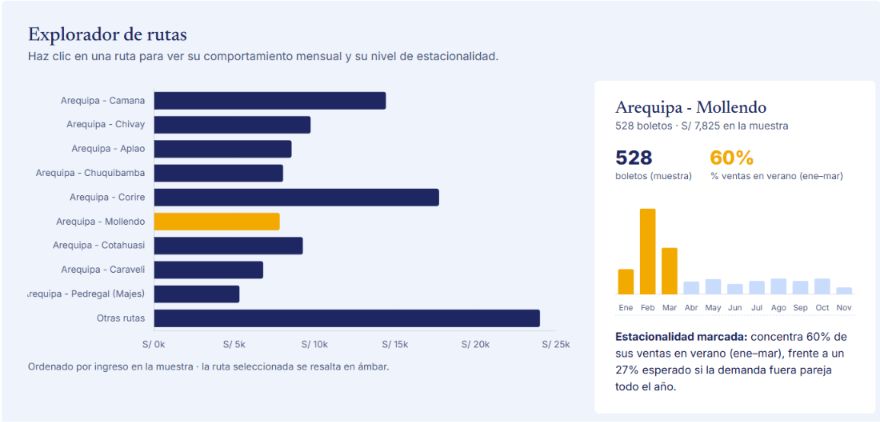
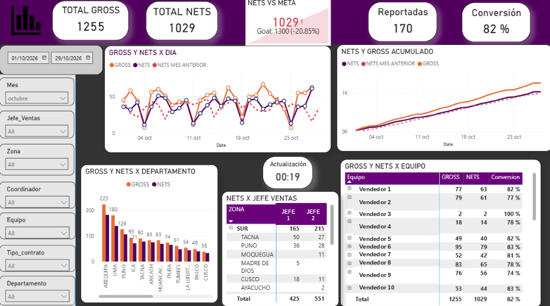
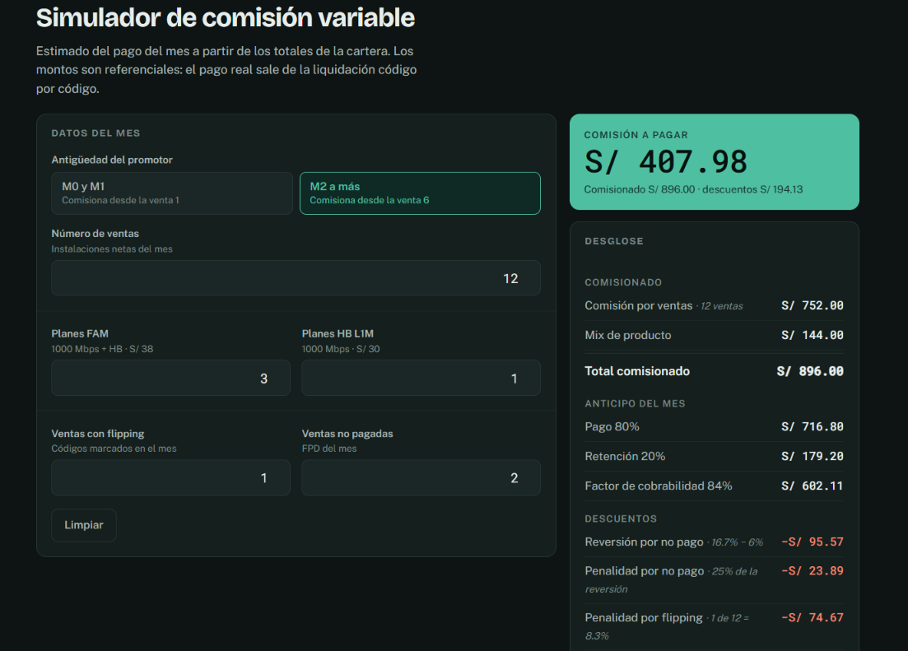

Analista BI · Freelance
Ayudo a negocios pequeños y equipos comerciales a convertir ventas, cobranzas y reportes en Excel en decisiones claras — empezando por un diagnóstico rápido, sin compromiso grande de entrada.
Tres niveles, pensados para que el primer paso sea pequeño y sin riesgo.
Paso 1
Reviso 1 o 2 fuentes de datos que ya tienes (Excel, CRM, reportes) y te entrego un documento corto con los 2 o 3 problemas de proceso que más te están costando.
3-5 días
Paso 2
Construyo el tablero o automatizo el proceso manual que el diagnóstico identificó como prioridad, en Power BI o Excel avanzado.
2-4 semanas
Paso 3
Mantengo el tablero, agrego reportes nuevos y lo ajusto cuando cambian tus reglas de negocio.
Mensual
Así se ve el proceso completo, de la primera llamada al documento final.
Una llamada corta de 20-30 minutos para entender tu negocio y qué decisiones tomas hoy sin datos claros.
Me compartes 1 o 2 archivos reales — no necesitas darme acceso a ningún sistema.
En 3 días te entrego un documento con los problemas de proceso más costosos que encontré, priorizados.
Conversamos los resultados y, si quieres avanzar, te propongo un precio cerrado para resolver el primero.
Ejemplo ilustrativo
* Ejemplo ilustrativo del tipo de hallazgo que entrega el diagnóstico — no corresponde a ningún cliente real.
Sin compromiso de continuar — el diagnóstico es tuyo, lo uses conmigo o no.

Un caso completo de principio a fin: diagnóstico, deck de servicio BI y tablero de análisis de ventas para una empresa de transporte interprovincial ficticia — pensado para mostrar el enfoque completo sin depender de datos reales de ningún cliente.

Tablero de ventas con seguimiento diario de avance frente a meta, desglosado por zona y por nivel de la estructura comercial.
* Nombres reemplazados por etiquetas genéricas por confidencialidad.

Reemplacé un cálculo mensual de comisiones variables hecho a mano en Excel por un proceso automatizado y repetible.
Trabajo a diario con KPIs comerciales reales — ventas, instalaciones, comisiones, cobranzas y retención de clientes — dentro de una estructura comercial de varios niveles. Eso me deja entender el proceso detrás del número, no solo el gráfico.
Cuéntame qué datos tienes y qué decisión te gustaría tomar mejor. El diagnóstico rápido es el primer paso.
Arequipa, Perú · trabajo remoto